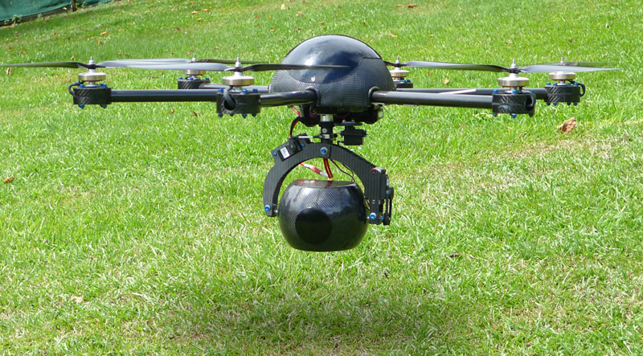

RESEARCH
 “We looked around and saw that while some of the solution was there, engines, propellers, electronics, the big issue was the airframe itself. It had to be strong enough to carry the camera but the vibration travelling through it meant you couldn’t get stable quality pictures. We needed an airframe that would eliminate the vibration”